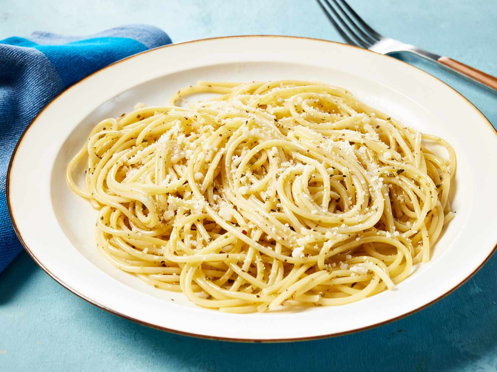

Garlic butter Pasta

Description
Garlic butter Pasta is a simple yet delicious dish.
Follow this recipe for a quick filling of your stomach.
Ingredients
- 200 g pasta
- 2 tbsp butter
- 2 cloves garlic (minced)
- Salt & pepper
- parmesan/parsley/chili flakes
- Boil pasta in salted water, drain (keep a bit of pasta water).
- Melt butter in a pan, add garlic — cook 30 sec.
- Add pasta and a splash of pasta water.
- Mix well, season with salt and pepper.
- Top with parmesan, parsley or chilli flakes .
Homepage